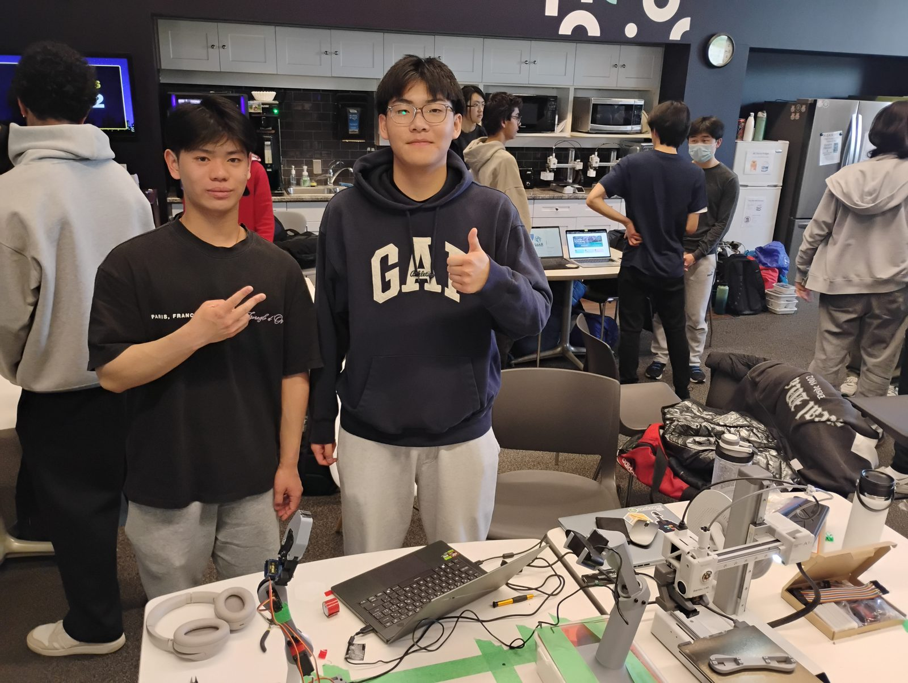

RICO, a robotic arm that fetches tools when you ask
Inverse kinematicsYOLOv8OpenCVGroq LLMPython

How the pipeline runs
A plain-language request is sent to a Groq LLM, which outputs a list of actions for the robot to complete the task. At the same time, an OpenCV pipeline computes a homography transform on each camera frame to get a bird's-eye view of the bench. When the trained YOLOv8 model detects the object, its pixel coordinates are multiplied by the homography matrix to get its position on the bench. That position is passed to an inverse kinematics solver, which calculates the joint angles the arm needs to reach and grab the object.
The object detector gives positions in pixels, but the IK solver needs positions in millimetres on the bench. For example, a bounding box centre at pixel (412, 260) cannot be used by the IK solver directly.
I used a homography transform to map the camera image plane onto the bench plane. This converts any detection into a real position on the bench, so tools can be placed anywhere instead of at fixed, pre-set positions.
Homography examples
Result
The arm goes from a spoken request to grabbing the tool, without fixed tool positions or separate calibration for each tool. Built and demoed during a hackathon weekend.